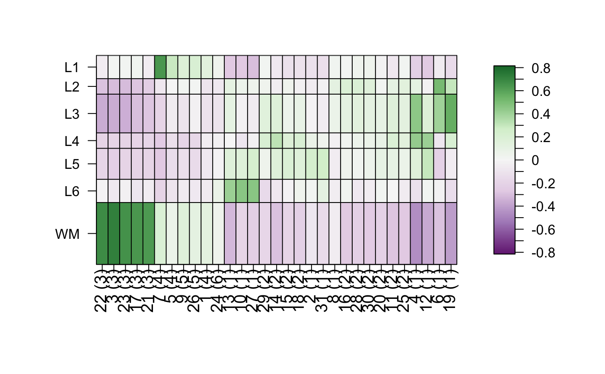
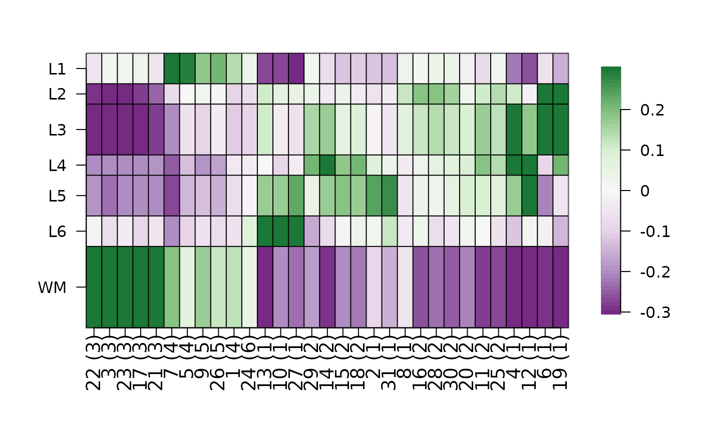

R/layer_stat_cor_plot.R
layer_stat_cor_plot.RdThis function makes a heatmap from the layer_stat_cor() correlation matrix
between a given set of cell cluster/type statistics derived from scRNA-seq
or snRNA-seq data (among other types) and the layer statistics from the
Human DLPFC Visium data (when using the default arguments).
layer_stat_cor_plot( cor_stats_layer, max = 0.81, min = -max, layerHeights = NULL, cex = 1.2 )
| cor_stats_layer | The output of |
|---|---|
| max | A |
| min | A |
| layerHeights | A |
| cex | Passed to |
A heatmap for the correlation matrix between statistics.
Check https://github.com/LieberInstitute/HumanPilot/blob/master/Analysis/Layer_Guesses/dlpfc_snRNAseq_annotation.R for a full analysis from which this family of functions is derived from.
layer_matrix_plot
Other Layer correlation functions:
layer_stat_cor()
Andrew E Jaffe, Leonardo Collado-Torres
## Obtain the necessary data if (!exists("modeling_results")) { modeling_results <- fetch_data(type = "modeling_results") } #> snapshotDate(): 2021-05-05 #> 2021-05-08 20:23:07 loading file /github/home/.cache/R/BiocFileCache/9f579be913d_Human_DLPFC_Visium_modeling_results.Rdata%3Fdl%3D1 ## Compute the correlations cor_stats_layer <- layer_stat_cor( tstats_Human_DLPFC_snRNAseq_Nguyen_topLayer, modeling_results, "enrichment" ) ## Visualize the correlation matrix layer_stat_cor_plot(cor_stats_layer)  ## Restrict the range of colors layer_stat_cor_plot(cor_stats_layer, max = 0.3) 